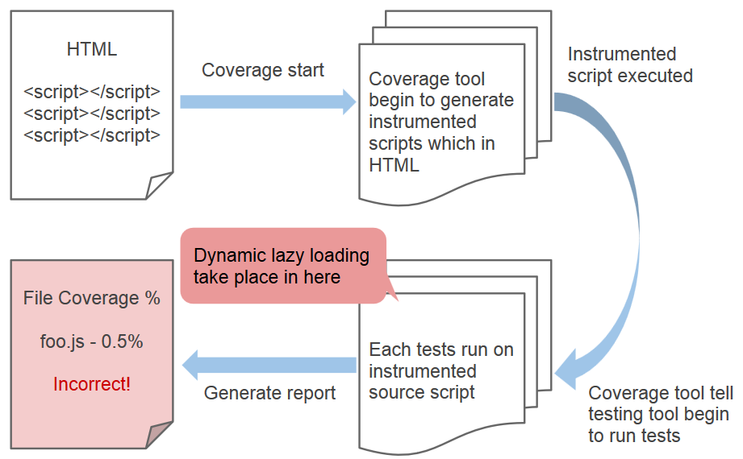
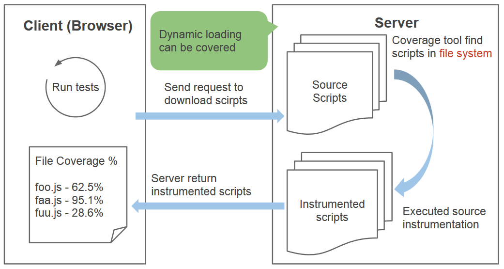
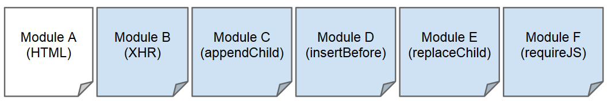
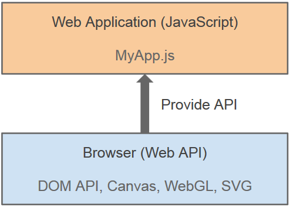

Test coverage on
Lazy Loading JavaScript
Created by Ricky Chien
Outline
- Test coverage
- Web application
- Background
- Test coverage with dynamic loading
- Analysis
- Method
- Achievement
- Conclusion
Test coverage
Why we need test coverage?
For better software quality, we need to write tests

A JavaScript unit tests example
Coverage tool can give us a statistics report after testing

Blanket.js - JavaScript test coverage tool
Even show source code coverage details
Web application
Web is changing
Nowadays, web is going to become more complicated
Client (Browser) can take more jobs than server
Like a desktop application but it is written by web technique

To build a web application
It's different with traditional website
Developers intent to distribute JavaScript files to modules
Web page is composed by modules or third-party libraries
Web application have to download source code from network

New issues
Too much requests will slow network down
User don't use all website functionalities every times
Huge JS libraries may block website loading
Solutions by dynamic loading
Dynamic loading
Also known as "Lazy loading"
Using javascript to load javascript in run-time
Add conditions to determine when will need to load javascript

Background
Browser test runner
Provide a real browser environment to run tests
Coverage mechanism
Browser instrumentation / Server instrumentation
Browser instrumentation
Browser instrumentation

Code instrumenting on browser
Browser instrumentation
Pros:
Quite friendly to novice developers
Pretty easy to integrate with various environments
Cons:
Not support to dynamic loading coverage
Server instrumentation
Need to use customized coverage server
Server instrumentation

Code instrumenting on coverage server
Server instrumentation

Pros:
The full coverage support including dynamic loading script
Cons:
Inconvenient to install and configure (ex: need Java)
Hard to integrate instrumentation server with other server
Our goal is to improve
browser instrumentation
Make it possible to cover dynamic loading scripts
Test coverage with dynamic loading
Zero coverage
Firefox OS email app should be covered 21 modules, but actually only one
Zero coverage
Prevalent web dynamic loading scheme
 Lazyload-sampleAnalysis
Analyze web script loading approachs
Script Loading - HTML Script
<script src="path/script.js"></script>
<script src="path/script.js" async></script>
<script src="path/script.js" defer></script>
Script Loading - XHR (Ajax)
var xhr = new XMLHttpRequest();
xhr.onload = function (responseScript) {
// Execute response script
eval(responseScript);
};
xhr.open('GET', 'URL');
xhr.send();
Script Loading - Document.write
document.write('');
Script Loading - DOM modification API
appendChild / insertBefore / replaceChild
var script = document.createElement("script");
script.src = url;
document.head.appendChild(script);
parentNode.insertBefore(script, node);
parentNode.replaceChild(script, oldNode);
Script Loading - Function Wrapping
Famous module loader library such as RequireJS using syntax :
require(["path/script.js"], function() {
// This function is called after path/script.js has loaded.
});
Summary

Method
Solution
Most of dynamic loading approachs are through DOM modification API and XHR
Overwrite DOM modification API and XHR to detect dynamic loading
Tests are needed to ensure our method is stable
Browser instrumentation Review
Solution

API structure
DOM modification API
Overwrite native appendChild / insertBefore / replaceChild
var originalAppendChild = Element.prototype.appendChild;
Element.prototype.appendChild = function(newElement) {
// Do our hack here
return originalAppendChild.apply(this, args); // invoke native method
};
XHR API
Overwrite native open method in XHR object
var originalXHROpen = XMLHttpRequest.prototype.open;
XMLHttpRequest.prototype.open = function(method, url) {
// Do our hack here
return originalXHROpen.apply(this, args); // invoke native method
};
Achievement
A simple dynamic loading website
New feature has landed in Firefox OS

Doesn't break original behavior even works fine in such complicated system
Supported browsers
New feature has been proposed to blanket
Conclusion
We demonstrated the zero coverage issue
Analyzed prevalent dynamic loading schemes
Proposed a solution to overwrite native Web APIs to addressing zero coverage issue
Experiment was successful so that can cover dynamic loading scripts
Solution is very stable and support most of modern browsers
New feature will land into Blanket.js